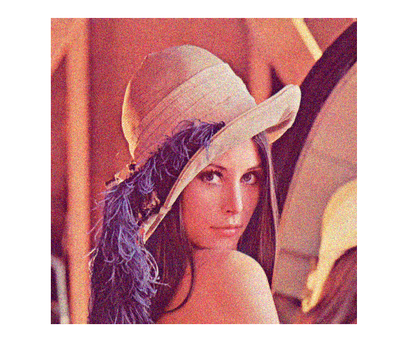
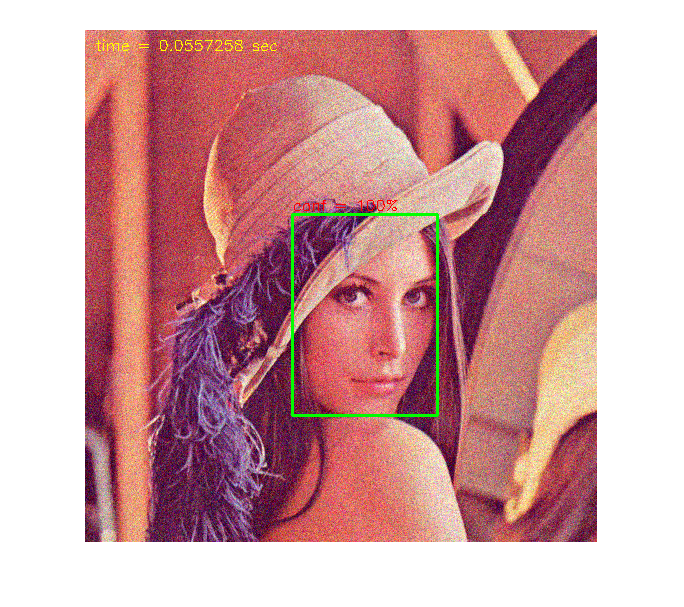

DNN: Face Detection
Face detector based on SSD framework (Single Shot MultiBox Detector), using a reduced ResNet-10 model.
Sources:
import network
[net, blobOpts] = ResNetSSD_FaceDetector(); assert(~net.empty());
minimum confidence threshold of detections to show
confThreshold = 0.5;
prepare video input
cap = createVideoCapture([], 'lena'); pause(1); assert(cap.isOpened(), 'Could not initialize capturing');
prepare figure
frame = cap.read();
assert(~isempty(frame), 'Could not read frame');
hImg = imshow(frame);main loop over video feed
while ishghandle(hImg) % read frame frame = cap.read(); if isempty(frame), break; end % detect faces [rects, confs] = detectFaces(frame, net, blobOpts, confThreshold); for i=1:size(rects,1) frame = cv.rectangle(frame, rects(i,:), ... 'Color',[0 255 0], 'Thickness',2); frame = cv.putText(frame, sprintf('conf = %3.0f%%', confs(i)*100), ... rects(i,1:2) - [0 4], 'Color',[255 0 0], 'FontScale',0.5); end % show inference timing [~,t] = net.getPerfProfile(); t = double(t) / cv.TickMeter.getTickFrequency(); frame = cv.putText(frame, sprintf('time = %g sec', t), [10 20], ... 'Color',[255 255 0], 'FontScale',0.5); % update plot set(hImg, 'CData',frame); drawnow; end cap.release();
Helper functions
function [rects, confs] = detectFaces(img, net, blobOpts, thresh) %DETECTFACES Run face detection network to detect faces on input image % % You may play with input blob sizes to balance detection quality and % efficiency. The bigger input blob the smaller faces may be detected. % % detect faces net.setInput(cv.Net.blobFromImages(flip(img,3), blobOpts{:})); dets = net.forward(); % SSD output is 1-by-1-by-ndetections-by-7 % d = [img_id, class_id, confidence, left, bottom, right, top] dets = permute(dets, [3 4 2 1]); % filter out weak detections if nargin < 4, thresh = 0.5; end idx = (dets(:,2) == 1 & dets(:,3) > thresh); % 0: background, 1: face dets = dets(idx,:); % adjust relative coordinates to image size sz = [size(img,2) size(img,1)]; dets(:,4:7) = bsxfun(@times, dets(:,4:7), [sz sz]); % output detections (clamp coords and remove small and out-of-bound rects) rects = cv.Rect.from2points(dets(:,4:5), dets(:,6:7)); rects = cv.Rect.intersect(rects, [0 0 sz]); idx = (cv.Rect.area(rects) >= 10); rects = rects(idx,:); confs = dets(idx,3); end
Pretrained models
function dname = get_dnn_dir(dname) %GET_DNN_DIR Path to model files, and show where to get them if missing dname = fullfile(mexopencv.root(), 'test', 'dnn', dname); b = isdir(dname); if ~b % display help of calling function % (assumed to be a local function in current file) st = dbstack(1); help([mfilename() filemarker() st(1).name]) end assert(b, 'Missing model: %s', dname); end function [net, blobOpts] = ResNetSSD_FaceDetector() %RESNETSSD_FACEDETECTOR face detector based on SSD framework with reduced ResNet-10 backbone % % homepage = https://github.com/opencv/opencv/blob/3.4.0/samples/dnn/face_detector/how_to_train_face_detector.txt % % ## Model % % file = test/dnn/ResNetSSD_FaceDetector/deploy.prototxt % url = https://github.com/opencv/opencv/raw/3.4.0/samples/dnn/face_detector/deploy.prototxt % hash = 006BAF926232DF6F6332DEFB9C24F94BB9F3764E % % ## Weights % % file = test/dnn/ResNetSSD_FaceDetector/res10_300x300_ssd_iter_140000.caffemodel % url = https://github.com/opencv/opencv_3rdparty/raw/dnn_samples_face_detector_20170830/res10_300x300_ssd_iter_140000.caffemodel % hash = 15aa726b4d46d9f023526d85537db81cbc8dd566 % size = 10.1 MB % dname = get_dnn_dir('ResNetSSD_FaceDetector'); net = cv.Net('Caffe', ... fullfile(dname, 'deploy.prototxt'), ... fullfile(dname, 'res10_300x300_ssd_iter_140000.caffemodel')); blobOpts = {'SwapRB',false, 'Crop',false, 'Size',[300 300], 'Mean',[104 117 123]}; end